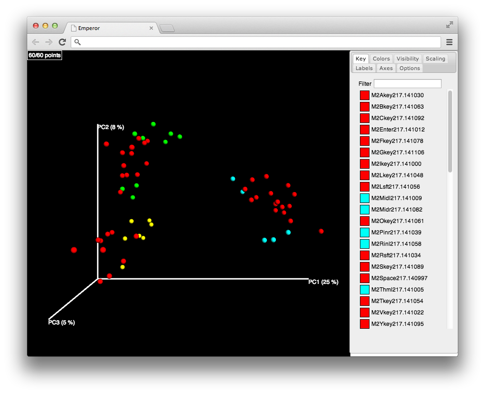
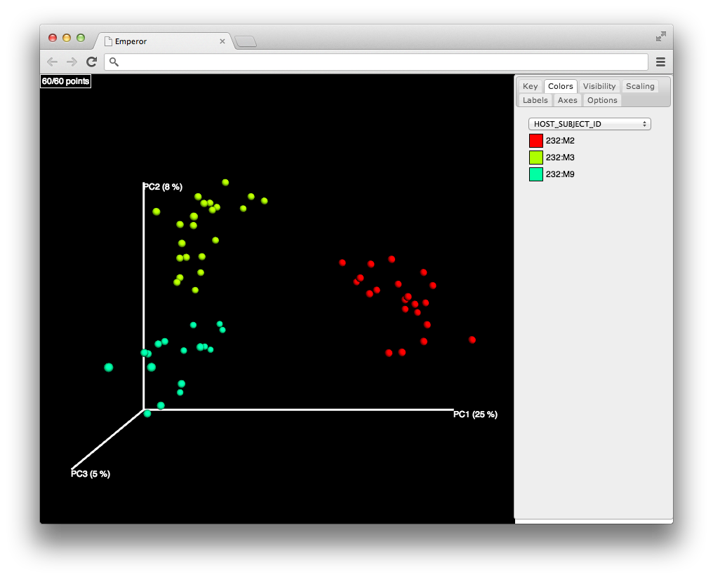
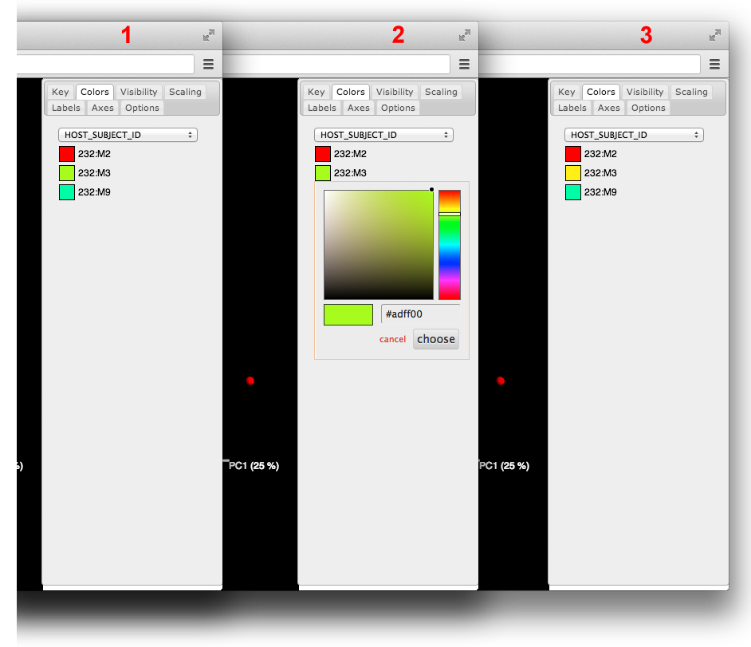
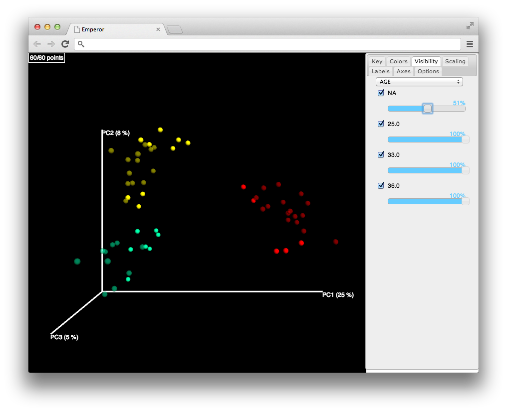
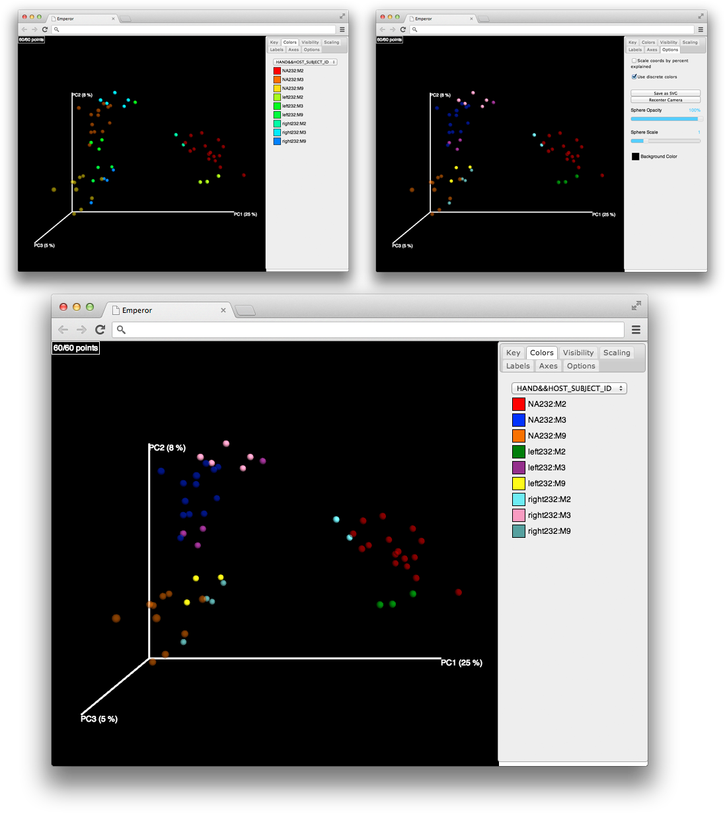
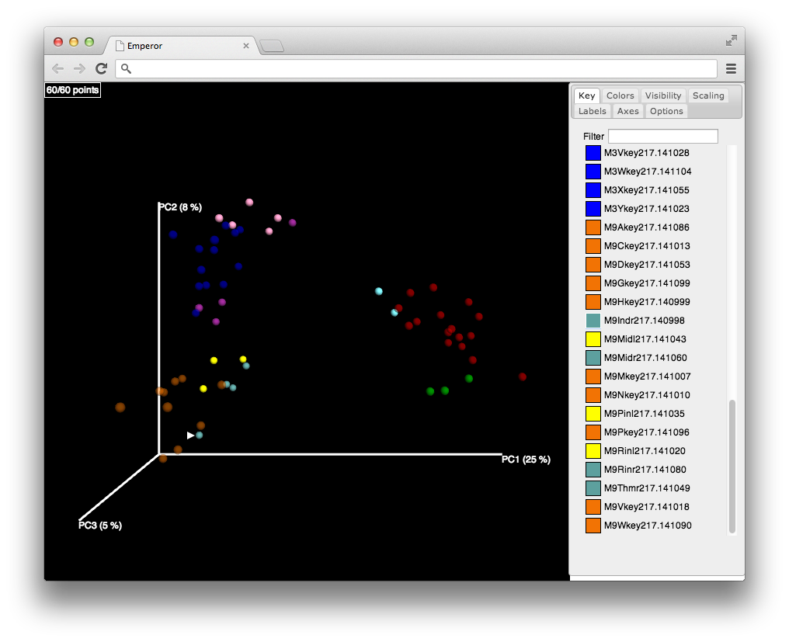
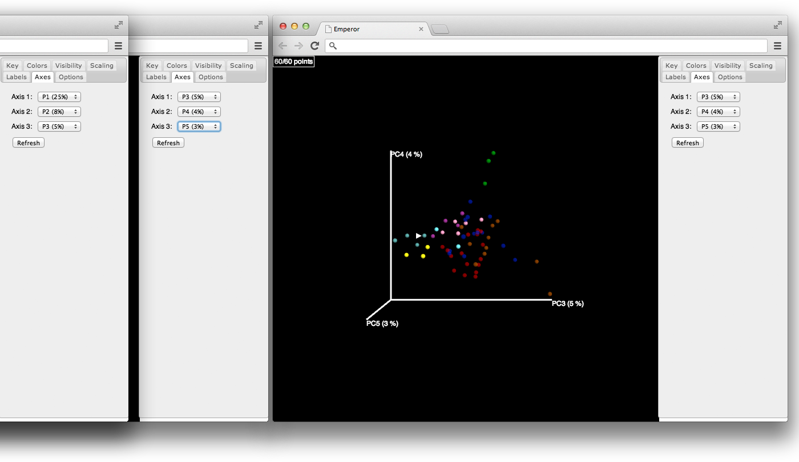
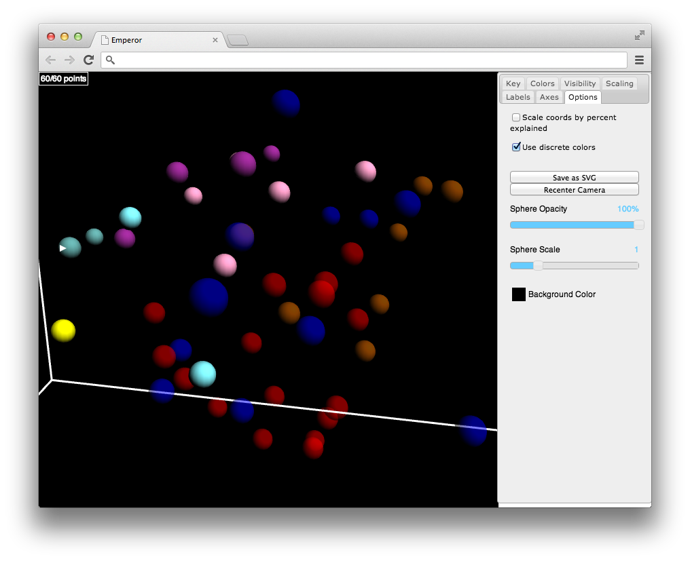
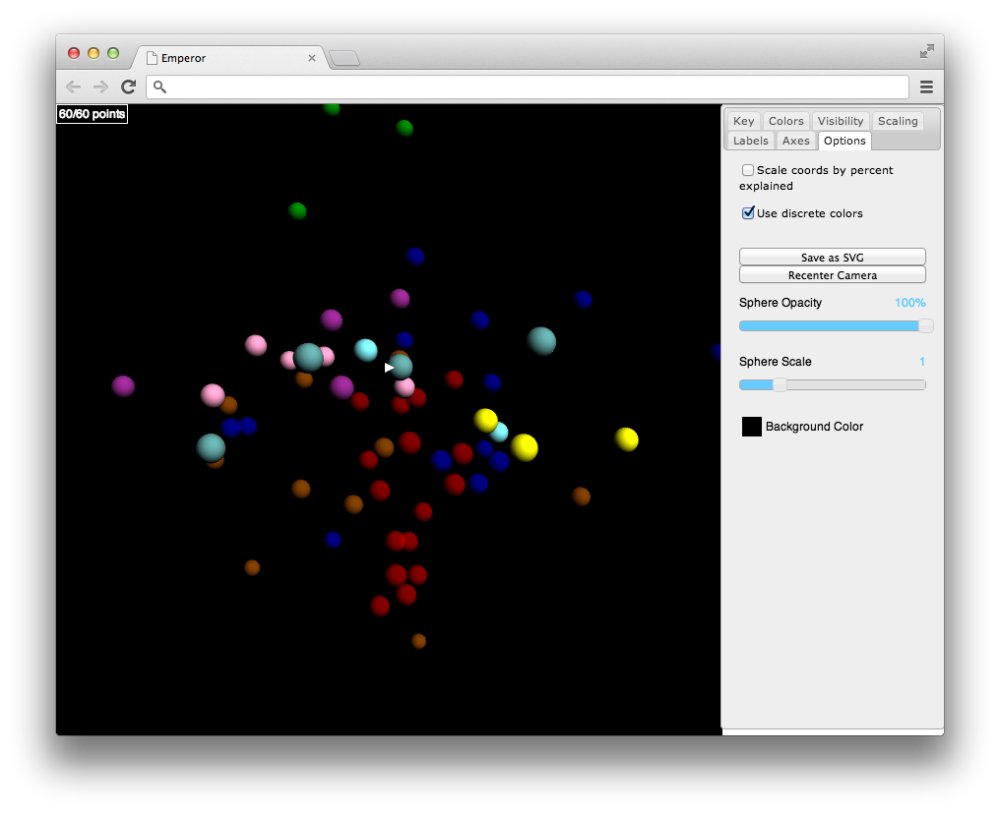
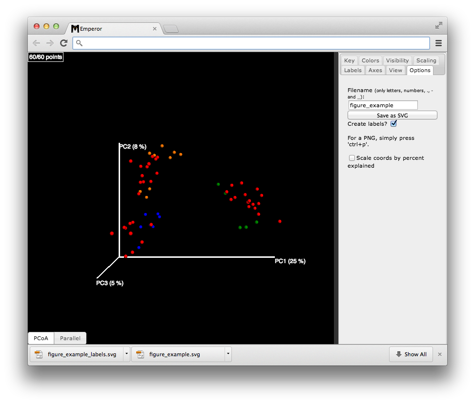

This tutorial attempts to cover most of the common use cases within Emperor.
The dataset that we will use to exemplify Emperor’s functionality, comes from the Fierer et. al. 2010 article, where three individuals and their keyboards were sampled, Figure 1.
To get started, first download and unzip these files, here you will find a principal coordinates file, and a mapping file. These input files are in the standard format used in QIIME. Before continuing with the tutorial make sure you have the latest version of Google Chrome installed in your computer. The sections described in this tutorial are:
Emperor offers a convenient command line interface script (make_emperor.py), see the installation notes for further details. The minimum inputs that this interface requires are a coordinates file and a mapping file, it’s worth noting that the script interface offers many options that allow the user to refine the amount of data to visualize or even to change the way it will be presented, calling make_emperor.py -h from a terminal window, will display the available options and a concise description for each of these.
Besides the coordinates and mapping file options, we will also use the -b option and the -o option. The -b option allows us to specify the categories that we want displayed in the GUI, it also allows us to combine columns from the mapping file into a single column. The -o option allows us to specify the name of the output directory.
make_emperor.py -i unweighted_unifrac_pc.txt -m mapping_file.txt -b "AGE,HAND,HAND_KEY,BODY_SITE,HOST_SUBJECT_ID,HAND,HAND&&HOST_SUBJECT_ID" -o keyboard
Note: when && is used with the -b option, two categories from the mapping file will be combined, in this case the values in HAND and the values in HOST_SUBJECT_ID will be concatenated.
A new folder named keyboard will be created, as this is the name we gave via -o, here you will find two files, these two files will be named the same for all datasets:
index.htmlemperor_required_resources/
Opening index.html with Google Chrome will present the main GUI, to do so you can right click this file and make sure you open it with Google Chrome.
Once you open the index.html file that was just generated, you should see something similar to the following figure:

For a detailed explanation of the options available from the main interface refer to the description section.
Spheres drawn in the main canvas are colored by the selected column in the mapping file under the Colors tab, in this example AGE. The available metadata categories are sorted in alphabetical order hence AGE is the first in this list. To change the coloring scheme click the Colors tab, then in the dropdown menu shown at the top click to select HOST_SUBJECT_ID. Now that samples are colored by this grouping, spheres will be colored in three different tints, each corresponding to a different subject.

Modifying the colors used to distinguish between subjects is achieved by clicking the frame by the side of each subject name. For example to change the color of the samples belonging to 232:M9, click on the green square by the left side of this label (1), a color picker will appear on screen (2), select a new color by pointing and clicking at it with the mouse; to confirm this selection use the choose button (3).

Similarly to the coloring of the samples, opacity is an attribute that can be determined on a per-category basis. To illustrate an example where this is useful, let’s reduce the opacity in the samples without an AGE value i. e. the keys of the subject’s keyboard. Begin by navigating to the visibility tab and with the slider under the label that reads NA, move it until you reach almost half the opacity. The end result will be similar to the next figure.

Frequently you will find that metadata categories have multiple values that are easier to visualize with a color map, on the other side when the values have no sequential relationship, it’s better to use what’s called a discrete set of colors. In this dataset the HAND&&HOST_SUBJECT_ID category that we create with the –b option is a good example. Switch to the Colors tab and then in the dropdown menu to change the category from HOST_SUBJECT_ID to the combination of both the HAND and HOST_SUBJECT_ID values. Navigate to the View menu and click the “Use gradient colors” checkbox this will let immediately switch the colors used for each of the values under this mapping file header.

Pointing out the location of a sample within the plot, can be achieved by using the Key menu for example let’s indicate where is sample M9Indr217.140998. In the Key tab and search for the name either using the text entry box or navigating through the list of values. Once you’ve found it click in the colored square by it’s side and a white arrow will appear on the plot pointing at the place where the sample is located.

Often times PCoA data will span over more than three dimensions, other dimensions can be visualized using the axes menu; just select the three coordinate axes that you want your data to be shaped by and hit the refresh button. In this instance let’s go to the Axes menu select P3 in the Axis 1 drop down menu, P4 in the Axis 2 drop down menu and P5 in the Axis 3 drop down menu, lastly click the refresh button this will redraw the visualization using the coordinate values in each of the selected axes.

Dragging the plot with the left button of the mouse, will let you rotate the plot in the direction that the mouse is being moved. If the right click is pressed instead, the plot will be dragged with all it’s elements. To zoom-in or zoom-out in the plot use the scroll wheel. And note that at any time you can go back to the options tab and click recenter camera to go back to the original position.


Emperor generates publication quality figures in scalable vector graphics (SVG) format. The "Save as SVG" button is found under the "Options" tab, note that if you mark the "Create labels?" checkbox an additional file with legends describing the coloring scheme, a color to category name pair, will be downloaded to your computer.

In this example setting the file name as "figure_example" renames the legends file as "figure_example_labels.svg" and the current view in the visualization canvas as "figure_example.svg".
Converting these figures into other formats can be achieved using external and freely available tools like Inkscape, which conveniently provides a command line utility to convert files into different formats. The following command line call will convert our SVG formatted file to a PDF formatted file.
inkscape -f figure_example.svg -A figure_example.pdfMore information about the usage of this command line utility can be found here.
Simply compress the output directory (specified by the -o option in make_emperor.py) and share. The newly created index.html file contained within the output directory can then be visualized and manipulated through the Chrome web browser as long as it is accompanied by the emperor_required_resources folder.